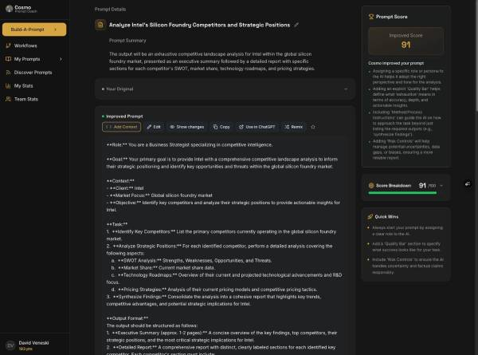
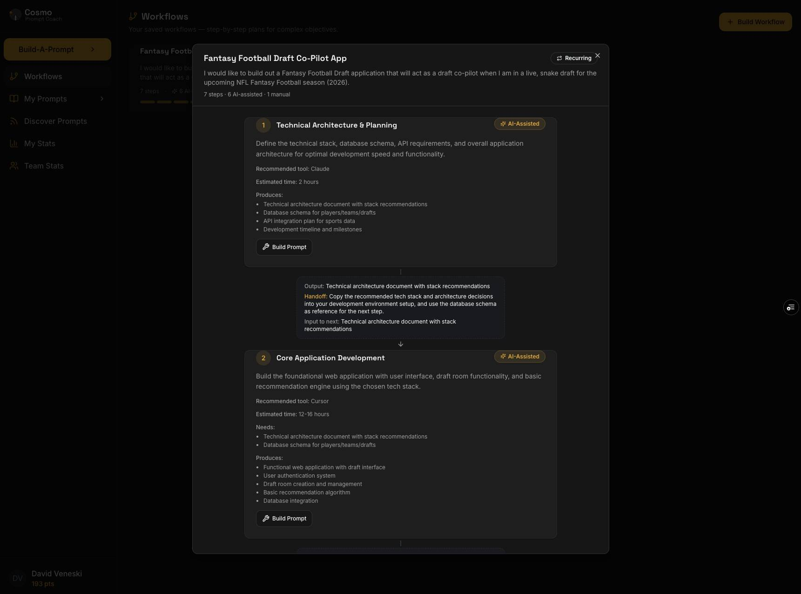
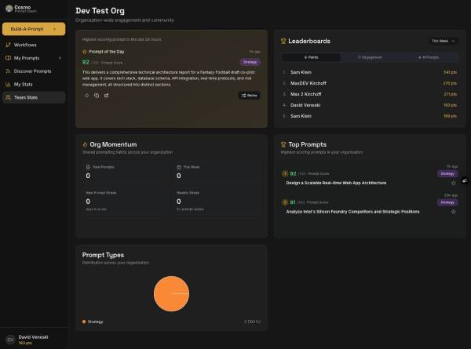

Meet Cosmo
A prompt coaching platform for real teams. Cosmo powers the AiA coaching model, helping teams write, reuse, and improve prompts across their organization. It's not another Ai tool — it's the infrastructure that turns scattered experimentation into organizational capability.
Cosmo works alongside the tools your team already uses — Claude, ChatGPT, Copilot, Gemini. Build the prompt in Cosmo, take it into the tool of choice for the actual work. A strong first prompt changes the entire trajectory of a session.
The Cosmo Loop
Write clear, effective prompts with coaching guidance at every step.
Start from proven prompts and adapt them for your specific use case.
Share prompts as organizational assets that every team can discover and use.
Track what works, gather feedback, and iterate on your best prompts.
Teams move from trying Ai to trusting Ai — creating Ai Momentum. Prompts become reusable assets, quality improves across the organization, teams stop reinventing prompts, and adoption accelerates.
What Cosmo Does
Write Better Prompts
Every prompt is scored with coaching guidance — not guess and check. Learn the patterns that work and apply them consistently across every role.
Your Best Users Lift Everyone
Your most advanced users aren't asked to sit through a 101 — they're asked to contribute. Their prompts feed a shared library. Their workflows become organizational assets. The strongest contributors raise the floor for everyone.
Build Organizational Memory
Today, the best Ai work lives in individual heads, individual chats, individual drafts. When someone switches teams or leaves, that work disappears. Cosmo captures it, scores it, and makes it findable and remixable across the company.
Real-Time Leadership Visibility
Which teams are using Ai heavily? Which functions produce the highest quality prompts? Which workflow opportunities are showing up in the data? The dashboard surfaces all of this in real time, broken out by region, discipline, and individual.
Built for how teams actually work



From prompt coaching and workflow building to team analytics and shared libraries — Cosmo gives your organization the infrastructure to turn Ai experimentation into daily habit.
Answers the questions that are otherwise unanswerable
Most Ai enablement engagements end with a slide deck, a few testimonials, and a self-report. Cosmo changes that — giving leadership real-time visibility into three dimensions of Ai adoption:
Cosmo compounds
The library grows with every contribution. The institutional memory thickens. Where today your organization has scattered Ai use and no organizational view, in twelve months you have a documented, shared, growing Ai capability that did not exist before.
Cosmo's data architecture is built by our CTO Max Kirchoff, formerly Principal Engineer for Ai at CertifID, where he built privacy-preserving LLM workflows for enterprise wire fraud prevention. Enterprise scale is the starting point, not an aspiration.